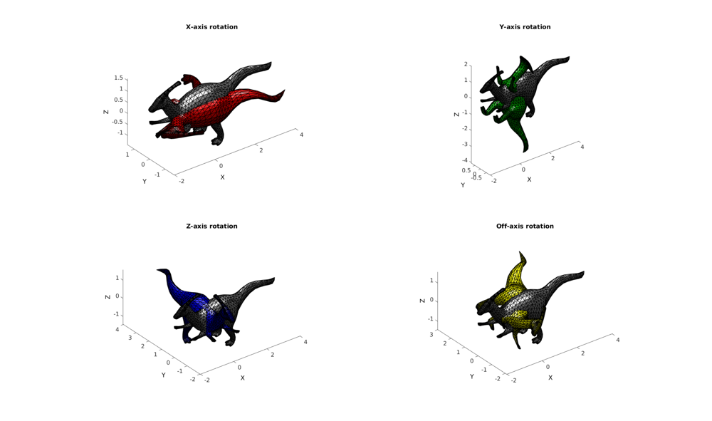

HELP_euler2DCM
Below is a demonstration of the features of the euler2DCM function
Contents
clear; close all; clc;
Plot settings
fig_color='w'; fig_colordef='white'; fontSize=15; faceAlpha=1; edgeColor=0*ones(1,3); edgeWidth=1;
Creating a rotation matrix using Euler angles
Search wikipedia for information on Euler angles to define a rotation or direction cosine matrix (DCM).
Load example patch data
[F,V]=parasaurolophus;
Defining sets of Euler angles for X, Y and Z axis rotation
E1=[0.5*pi 0 0]; E2=[0 0.5*pi 0]; E3=[0 0 0.5*pi]; E4=[0.25*pi 0.25*pi 0.25*pi];
Use euler2DCM function to define the rotation matrices
[R1]=euler2DCM(E1); [R2]=euler2DCM(E2); [R3]=euler2DCM(E3); [R4]=euler2DCM(E4);
Rotate the coordinates
V1=(R1*V')'; V2=(R2*V')'; V3=(R3*V')'; V4=(R4*V')';
Plotting data
hf=figuremax(fig_color,fig_colordef); subplot(2,2,1); title('X-axis rotation','FontSize',fontSize); xlabel('X','FontSize',fontSize); ylabel('Y','FontSize',fontSize); zlabel('Z','FontSize',fontSize); hp=patch('Faces',F,'Vertices',V,'FaceColor',0.5*ones(1,3),'FaceAlpha',faceAlpha,'lineWidth',edgeWidth,'edgeColor',edgeColor); hp=patch('Faces',F,'Vertices',V1,'FaceColor','r','FaceAlpha',faceAlpha,'lineWidth',edgeWidth,'edgeColor',edgeColor); camlight headlight; set(gca,'FontSize',fontSize); view(3); axis tight; axis equal; subplot(2,2,2); title('Y-axis rotation','FontSize',fontSize); xlabel('X','FontSize',fontSize); ylabel('Y','FontSize',fontSize); zlabel('Z','FontSize',fontSize); hp=patch('Faces',F,'Vertices',V,'FaceColor',0.5*ones(1,3),'FaceAlpha',faceAlpha,'lineWidth',edgeWidth,'edgeColor',edgeColor); hp=patch('Faces',F,'Vertices',V2,'FaceColor','g','FaceAlpha',faceAlpha,'lineWidth',edgeWidth,'edgeColor',edgeColor); camlight headlight; set(gca,'FontSize',fontSize); view(3); axis tight; axis equal; subplot(2,2,3); title('Z-axis rotation','FontSize',fontSize); xlabel('X','FontSize',fontSize); ylabel('Y','FontSize',fontSize); zlabel('Z','FontSize',fontSize); hp=patch('Faces',F,'Vertices',V,'FaceColor',0.5*ones(1,3),'FaceAlpha',faceAlpha,'lineWidth',edgeWidth,'edgeColor',edgeColor); hp=patch('Faces',F,'Vertices',V3,'FaceColor','b','FaceAlpha',faceAlpha,'lineWidth',edgeWidth,'edgeColor',edgeColor); camlight headlight; set(gca,'FontSize',fontSize); view(3); axis tight; axis equal; subplot(2,2,4); title('Off-axis rotation','FontSize',fontSize); xlabel('X','FontSize',fontSize); ylabel('Y','FontSize',fontSize); zlabel('Z','FontSize',fontSize); hp=patch('Faces',F,'Vertices',V,'FaceColor',0.5*ones(1,3),'FaceAlpha',faceAlpha,'lineWidth',edgeWidth,'edgeColor',edgeColor); hp=patch('Faces',F,'Vertices',V4,'FaceColor','y','FaceAlpha',faceAlpha,'lineWidth',edgeWidth,'edgeColor',edgeColor); camlight headlight; set(gca,'FontSize',fontSize); view(3); axis tight; axis equal; drawnow;
A second output can also be requested which is the inverse rotation matrix.
[R,Ri]=euler2DCM([randn(1,3)*pi]); R Ri
R =
-0.3229 -0.0903 0.9421
0.9253 0.1791 0.3343
-0.1989 0.9797 0.0258
Ri =
-0.3229 0.9253 -0.1989
-0.0903 0.1791 0.9797
0.9421 0.3343 0.0258
i.e. such that the following :
Vr=(R*V')'; %The rotated coordinates Vn=(Ri*Vr')'; %The normal coordinates after transforming back the rotated coordinates using inverse matrix
Note that the sum of squared differences for instance is nearly zero
D=sum((V(:)-Vn(:)).^2)
D = 6.1545e-29
Creating multiple rotation matrices
It is possible to define multiple rotation matrices at once by specifying a multi-row angle set
E=[0.25*pi 0 0; 0 0.5*pi 0]; %E.g. two angle sets are specified, 1 for each row
In this case the rotation matrices are stacked in the 3rd dimension
[R]=euler2DCM(E)
R(:,:,1) =
1.0000 0 0
0 0.7071 -0.7071
0 0.7071 0.7071
R(:,:,2) =
0.0000 0 1.0000
0 1.0000 0
-1.0000 0 0.0000

GIBBON www.gibboncode.org
Kevin Mattheus Moerman, gibbon.toolbox@gmail.com
GIBBON footer text
License: https://github.com/gibbonCode/GIBBON/blob/master/LICENSE
GIBBON: The Geometry and Image-based Bioengineering add-On. A toolbox for image segmentation, image-based modeling, meshing, and finite element analysis.
Copyright (C) 2018 Kevin Mattheus Moerman
This program is free software: you can redistribute it and/or modify it under the terms of the GNU General Public License as published by the Free Software Foundation, either version 3 of the License, or (at your option) any later version.
This program is distributed in the hope that it will be useful, but WITHOUT ANY WARRANTY; without even the implied warranty of MERCHANTABILITY or FITNESS FOR A PARTICULAR PURPOSE. See the GNU General Public License for more details.
You should have received a copy of the GNU General Public License along with this program. If not, see http://www.gnu.org/licenses/.